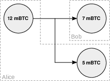

12 Les rouages de la machine
Bitcoin est une étrange machine. Né dans un rapport antagoniste vis-à-vis de l’autorité, il possède des propriétés qui ne se retrouvent pas dans les systèmes informatiques communs. En particulier, il ne peut pas être modifié n’importe comment, ce qui explique sa conception originelle et son évolution ultérieure.
D’une part, la représentation des unités de base, les satoshis, ne se fait pas sous la forme de comptes où les soldes des utilisateurs seraient mis à jour, mais par le biais de pièces de cryptomonnaies pouvant être combinées et séparées dans les transactions. Ce fonctionnement favorise la confidentialité et la scalabilité de la chaîne, et s’adapte ainsi à l’utilisation monétaire.
D’autre part, Bitcoin intègre un système de programmation interne permettant d’intégrer des conditions de dépense dans les pièces, ce qu’on appelle parfois des contrats autonomes ou smart contracts. Il a été amélioré au cours des années, parfois au prix d’une plus grande complexité, notamment via l’ajout de SegWit et de Taproot.
Dans ce chapitre, nous examinerons les rouages de cette machine transactionnelle, avant de décrire comment elle peut être exploitée et améliorée à des fins de confidentialité. Le prochain chapitre sera consacré aux contrats en tant que tels.
Les transactions et les pièces
Dans Bitcoin, les transactions possèdent un rôle central. Le protocole est fait pour échanger de la valeur conformément à son rôle monétaire, donc de traiter les transferts de propriété. Tout le fonctionnement du système a été pensé pour faciliter la construction, la signature et la diffusion des transactions, leur conservation en mémoire dans la mempool, et leur ajout au registre par leur inclusion dans un bloc.
Chaque transaction est constituée d’une ou plusieurs entrées et d’une ou plusieurs sorties. Une sortie transactionnelle se compose simplement d’une indication de destination et d’un montant en unités (satoshis). Une entrée fait généralement référence à une sortie transactionnelle précédente, sauf dans le cas de la transaction de récompense où elle représente une « base de pièce » créant de nouvelles unités issues de l’émission monétaire et des frais de transaction.
L’identifiant d’une transaction (transaction identifier ou ) est l’empreinte des données brutes qu’elle contient, obtenue via le hachage par double SHA-256. Chaque sortie transactionnelle est caractérisée par l’identifiant de la transaction dont elle est issue et par sa position dans cette transaction, qu’on appelle l’indice. Ce point de sortie (outpoint) sert d’indication de provenance. Un exemple de point de sortie est .
Contrairement à ce que la description de la propriété dans le chapitre 7 suggère, la destination et la provenance des unités ne sont pas à proprement parler des adresses, mais des scripts de verrouillage, c’est-à-dire des petits programmes qui déterminent leurs conditions de dépense. Chaque sortie crée ainsi un script qui bloque les fonds d’une façon spécifique. Le plus souvent, ce script contient une clé publique ou une empreinte de clé publique, qui peut être interprétée comme une adresse par le portefeuille.
Pour être valide, une entrée doit contenir un script de déverrouillage dont l’exécution, combinée à celle du script de verrouillage, réussisse. En général, ce script de déblocage des fonds contient une signature numérique qui correspond à la clé publique liée au script de verrouillage précédent : la vérification de la signature permet de s’assurer que la personne qui dépense les unités en est le propriétaire.
Ce fonctionnement fait que le modèle de représentation des unités est contre-intuitif. Le protocole ne voit pas de comptes dont les soldes seraient actualisés par les transactions, comme c’est le cas dans Ethereum par exemple. Il voit simplement des sorties transactionnelles détenues par des propriétaires, de manière similaire aux pièces de monnaies dans le monde physique.
Ainsi, Bitcoin met en œuvre le concept de pièce de monnaie numérique qui était discuté au sein de la communauté cypherpunk dans les années 1990. Dans le Cyphernomicon par exemple, Tim May estimait que la chose était impossible, en raison du problème de la double dépense. Satoshi Nakamoto, en découvrant une manière de résoudre ce problème, a pu rendre le concept viable et l’a intégré dans Bitcoin. Dans le livre blanc, il décrivait la notion de pièce numérique comme suit :
« Nous définissons une pièce de monnaie électronique comme une chaîne de signatures numériques. Chaque propriétaire transfère la pièce au suivant en signant numériquement l’empreinte de la transaction précédente et la clé publique du propriétaire suivant, et en les ajoutant à la fin de la pièce. Un bénéficiaire peut vérifier les signatures pour vérifier la chaîne de propriété1. »
1 Satoshi Nakamoto, Bitcoin: A Peer-to-Peer Electronic Cash System, 31 octobre 2008.
Dans Bitcoin, les pièces existantes sont donc les sorties transactionnelles non dépensées, nommées usuellement UTXO par abréviation de l’anglais Unspent Transaction Outputs, à savoir les sorties transactionnelles qui n’ont pas été utilisées comme entrée dans une autre transaction. L’ensemble de ces pièces, l’UTXO set, constitue le registre de propriété. C’est l’état du système, qui peut être récupéré à partir de son historique, la chaîne de blocs.
Chaque pièce est constituée d’un montant en unités (satoshis) et d’un script de verrouillage. Il peut ainsi exister des pièces d’un milliard de satoshis (10 bitcoins) tout comme on peut avoir des pièces de 546 satoshis (0,00000546 bitcoin).
Le script de verrouillage d’une pièce contient le plus souvent une clé publique ou une empreinte déterminée, de sorte que la pièce peut être vue comme étant détenue par l’adresse correspondante. De ce fait, deux pièces partageant le même script de verrouillage sont détenues par la même adresse. Un compte dans Bitcoin correspond à l’ensemble des adresses contrôlées par un utilisateur. Le solde est récupéré en balayant l’ensemble des UTXO de façon à retrouver les pièces détenues par ces adresses.

Ce modèle de représentation par des pièces fait qu’on peut voir le mécanisme de transaction comme une fonderie de pièces de monnaie. Chaque transaction consiste à fondre ensemble une ou plusieurs pièces de bitcoin en entrée et à frapper une ou plusieurs pièces en sortie. C’est en ceci que le serveur d’horodatage distribué de Bitcoin vient remplacer la monnaierie numérique centralisée permettant le remplacement systématique des pièces, qui est présente dans eCash et RPOW par exemple.
La construction d’une transaction implique de rassembler des pièces de valeur suffisante en entrée pour les fondre et en frapper de nouvelles. En général, deux pièces sont créées : la première est créée sur l’adresse fournie par le destinataire pour effectuer le paiement (sortie principale) et la seconde est créée sur l’une des adresses de l’expéditeur afin qu’il se « rende la monnaie » (sortie complémentaire). La différence entre le montant en entrée et le montant en sortie est prise en compte dans la récompense du mineur en tant que frais de transaction.
Considérons quelques exemples en ignorant ces frais et supposons qu’Alice veuille procéder à un paiement. Si Alice possède une pièce de 12 mBTC (0,012 BTC) et veut donner 7 mBTC à Bob, alors elle doit construire et signer une transaction ayant pour entrée cette pièce de 12 mBTC et pour sorties une pièce de 7 mBTC vers l’adresse de Bob et une pièce restante de 5 mBTC vers sa propre adresse. Cette transaction est représentée par la figure 12.2.

Si Alice ne possède pas une pièce ayant une valeur faciale supérieure à 7 mBTC, alors elle doit regrouper des pièces pour réunir un montant suffisant en entrée, par exemple une pièce de 6 mBTC et une pièce de 2 mBTC. Comme précédemment, elle doit créer une sortie complémentaire vers elle-même dans le but de se rendre la monnaie. Dans ce cas, illustré sur la figure 12.3, on peut deviner en observant la transaction que la pièce de 7 mBTC est le résultat du paiement, car il serait économiquement irrationnel de fusionner plusieurs pièces pour envoyer 1 mBTC.

Si Alice désire transférer l’intégralité des fonds vers un autre compte, alors elle rassemble l’ensemble de ses pièces (6 mBTC, 4 mBTC, 2 mBTC) pour les envoyer vers une adresse unique, comme montré sur la figure 12.4. C’est ce qu’on appelle une consolidation de portefeuille, qui peut être identifiée par un observateur extérieur en raison de l’unicité de la sortie.
Nous voyons ainsi que les transactions ne sont pas des transferts bruts d’une adresse vers une autre, mais des combinaisons-séparations de pièces de monnaies numériques. Ce fonctionnement est quelque peu contre-intuitif, mais se révèle utile pour la scalabilité du système, en permettant le traitement indépendant des pièces, et pour la confidentialité des utilisateurs, en n’incitant pas au rassemblement des fonds sur une même adresse et en facilitant l’implémentation de techniques d’anonymisation comme le mélange des pièces. Ce modèle est donc particulièrement adapté à l’utilisation monétaire.
La machine virtuelle
Les scripts présents au sein des transactions font de Bitcoin un système de monnaie programmable. Ces scripts permettent en effet la mise en place d’une variété de conditions de dépense, aussi appelées clauses, qui vont au-delà de l’exigence d’une signature simple, comme la connaissance d’un secret, l’attente d’une période de temps ou la production de signatures multiples.
La mise en œuvre de Bitcoin crée une machine abstraite dont le fonctionnement est répliqué sur tous les nœuds du réseau grâce à l’algorithme de consensus. Elle est simulée par l’intermédiaire de l’implémentation logicielle, de sorte qu’on parle de machine virtuelle. Plus précisément, il s’agit d’une machine à états, dont l’état courant est l’ensemble des pièces existantes, c’est-à-dire l’ensemble des sorties transactionnelles non dépensées (UTXO), et dont les transitions sont les transactions, qui détruisent des pièces pour en créer de nouvelles. Ces transactions sont assemblées dans des blocs qui sont validés à intervalles réguliers par les mineurs. La diffusion d’un bloc sur le réseau permet d’actualiser l’état de la machine virtuelle, qui est (sauf dans le cas d’un embranchement) partagé par tous les nœuds.
Au sein d’une transaction, le déverrouillage des pièces se fait par l’exécution de scripts. Les scripts sont des prédicats au sens mathématique, c’est-à-dire des expressions incomplètes qui deviennent des propositions pouvant être évaluées si elles sont complétées par un ou plusieurs éléments. De ce fait, la dépense consiste à réunir le script de verrouillage de la sortie précédente et le script de déverrouillage, et à les exécuter l’un après l’autre : le script de déverrouillage d’abord, le script de verrouillage ensuite. L’utilisation de la pièce comme entrée de transaction n’est approuvée que si l’exécution réussit.
Les scripts sont écrits dans le langage de programmation interne de Bitcoin, conçu par Satoshi Nakamoto dès 2008 et baptisé de façon peu originale « Script ». Ce langage de programmation fonctionne de manière similaire à Forth, un langage utilisé dans les années 1970 et 1980. Il se base en particulier sur deux piles de données, qui sont des structures de données fondées sur le principe du « dernier arrivé, premier sorti » (last in, first out, ou LIFO). Le langage agit essentiellement sur la pile primaire, de sorte que celle-ci est la plus importante ; la pile secondaire permet seulement de mettre des données de côté pendant l’exécution d’un script.
Satoshi Nakamoto a inclus ce système de scripts dans Bitcoin pour lui permettre de gérer une grande variété de cas d’utilisation. En juin 2010, en réponse à Gavin Andresen, il écrivait la chose suivante sur le forum :
« La nature de Bitcoin est telle que, dès la version 0.1 lancée, son fonctionnement de base était gravé dans le marbre pour le reste de son existence. C’est pour cette raison que je voulais concevoir Bitcoin pour qu’il supporte tous les types de transactions auxquels je pouvais penser. Le problème était que chaque élément requérait un code de prise en charge et des champs de données spéciaux, qu’il soit utilisé ou non, et ne pouvait couvrir qu’un cas particulier à la fois. Ç’aurait été une explosion de cas particuliers. La solution était script, qui généralisait le problème de façon à ce que les parties contractantes puissent décrire leurs transactions comme des prédicats que les nœuds du réseau évaluaient. Les nœuds ont seulement besoin de comprendre la transaction dans la mesure où ils évaluent si les conditions de l’expéditeur sont remplies ou non2. »
2 Satoshi Nakamoto, Re: Transactions and Scripts: DUP HASH160 ... EQUALVERIFY CHECKSIG, 17/06/2010 18:46:08 : https://bitcointalk.org/index.php?topic=195.msg1611#msg1611.
Le langage est constitué de plus d’une centaine d’opérateurs, aussi appelés codes opération (opcodes), qui agissent sur la pile primaire d’une manière ou d’une autre. Les opérateurs sont des nombres codés sur 1 octet (allant de 0 à 255), mais sont usuellement désignés par un nom décrivant leur fonction, dans le but de rendre la lecture plus compréhensible par l’être humain. Ils sont notés en majuscules et sont souvent précédés du préfixe OP_ même s’il peut être omis en l’absence d’ambiguïté. Par exemple, l’opérateur permettant de vérifier une signature (0xac) est noté OP_CHECKSIG ou CHECKSIG.
Les opérateurs allant de 1 à 75, parfois notés , ont pour action d’empiler des données ayant une taille allant de 1 à 75 octets. L’utilisation d’opérateurs supplémentaires spécifiques (notés ) permet cependant de placer une information plus grande sur la pile. Bien qu’on puisse utiliser cette notation, il est généralement plus simple de placer un élément entre chevrons pour indiquer qu’il est placé au sommet de la pile. Par exemple, le fait d’écrire au sein d’un script signifie que la signature est empilée.
La valeur retournée à la fin de l’exécution des scripts est un booléen, de sorte que le script peut être valide, auquel cas la dépense de la pièce est approuvée, ou bien invalide, auquel cas la transaction est rejetée dans son ensemble. Le script est valide si et seulement si la valeur TRUE (« vrai ») est présente en haut de la pile à la fin de l’exécution. Il est invalide si ce n’est pas le cas ou si son exécution s’est arrêtée avant la fin.
Le langage Script est cependant limité. Rien dans sa conception de base ne permet de faire de boucles, ni d’accéder à des données extérieures à celles de la transaction, contrairement au langage d’Ethereum qui est quasi Turing-complet. Cette particularité fait qu’il est moins flexible, mais qu’il a l’avantage d’être plus simple à appréhender et donc plus sûr.
L’exemple typique de script, présenté par Andreas Antonopoulos3, est celui qui consiste à résoudre une équation simple impliquant une addition. Si on considère l’équation \(17 + x = 38\), alors le script de verrouillage qui correspond est :
3 Andreas M. Antonopoulos, « Transactions », in Mastering Bitcoin: Programming the Open Blockchain, 2 édition, 2017, pp. 117–148.
<17> ADD <38> EQUALToute personne disposant de la réponse peut dépenser la pièce, ce qui on en convient n’est pas très sécurisé. La dépense requiert ici de fournir le script de déverrouillage composé uniquement de la solution de l’équation, à savoir 21 :
<21>L’exécution successive de ces deux scripts (voir figure 12.5) a lieu comme suit : 1) la valeur 21 est placée sur la pile ; 2) la valeur 17 est placée au-dessus ; 3) l’opérateur OP_ADD additionne les deux valeurs en haut de la pile et les remplace par leur somme, ici 38 ; 4) la valeur 38 est placée au sommet de la pile ; 5) l’opérateur OP_EQUAL compare les deux valeurs en haut de la pile et les remplace par le booléen d’égalité, ici TRUE. L’exécution du script est donc un succès.
Si la valeur avait été différente, de 22 par exemple, alors la dernière opération aurait retourné le booléen FALSE (« faux ») et la transaction de dépense aurait été invalidée.
Beaucoup de conditions de dépense différentes peuvent être implémentées par ce système. Certaines de ces conditions sont simples comme la connaissance d’un secret spécifique ou la production d’une signature valide correspondant à une clé publique particulière. La connaissance d’un secret (dont l’empreinte est spécifiée dans l’UTXO) est vérifiée par les scripts suivants qui placent le secret au sommet de la pile, le hachent par SHA-256 et comparent le résultat à l’empreinte :
<secret> || SHA256 <empreinte> EQUALDe même, la vérification de la validité d’une signature est réalisée par les scripts suivants qui empilent d’abord la signature, puis la clé publique avant de contrôler leur correspondance :
<signature> || <clé publique> CHECKSIGEn outre, il existe des conditions plus avancées comme les verrous temporels. Ceux-ci permettent de bloquer les fonds de la pièce pour un temps précis, que ce soit jusqu’à une date donnée, auquel cas on parle de temps de verrouillage absolu, ou bien pendant une période donnée, auquel cas on parle de temps de verrouillage relatif. Le premier est le fait de l’opérateur dont les spécificités techniques sont décrites dans le BIP-65. Le second est appliqué par le code opération décrit dans le BIP-112.
Les schémas classiques
Le langage Script permet de faire des choses diverses et variées. Pendant les premiers temps de Bitcoin, le système était relativement libre et autorisait les gens à écrire ce qu’ils voulaient dans les scripts sans discrimination. Toutefois, cette situation était considérablement risquée. La raison principale était que le fonctionnement des codes opération n’était pas encore vérifié et testé, comme l’avait montré la découverte en juillet 2010 d’une vulnérabilité rendue possible par certains opérateurs binaires (CVE-2010-5137). C’est pourquoi il a été décidé à la fin de l’année 2010, sous l’impulsion de Gavin Andresen, de restreindre la facilité de programmation du système4.
4 Gavin Andresen, svn r197: IsStandard check for transactions, 07/12/2010 13:58:33 UTC : https://bitcointalk.org/index.php?topic=2129.msg27744#msg27744.
Cette restriction a été appliquée en imposant des schémas standards de scripts, qui faisaient que les nœuds configurés par défaut ne relayaient plus les transactions contenant des scripts qui ne respectaient pas ce standard. Il ne s’agissait pas ainsi d’une restriction des règles globales de consensus, mais des règles locales de mempool qui s’appliquent à la transmission des transactions. Des schémas standards rendant les choses plus simples et plus sûres ont ainsi été développés au cours des années. Les schémas standards de sortie transactionnelle étaient en 2023 au nombre de huit : P2PK, P2PKH, P2MS, P2SH, NULLDATA, P2WPKH, P2WSH et P2TR.
P2PK : Pay to Public Key
Le premier schéma s’appelle Pay to Public Key (P2PK), qu’on peut traduire littéralement en français par « payer à la clé publique ». Il s’agit de créer une pièce liée à la clé publique d’un destinataire, que lui seul peut dépenser en signant avec sa clé privée. Le script de verrouillage permettant ce type d’envoi est :
<clé publique> CHECKSIGLa présence de la clé publique explique qu’on parle parfois de « scriptPubKey » pour désigner le script de verrouillage en général, indépendamment de ce qu’il contient.
Au moment de la dépense, le destinataire doit utiliser un script de déverrouillage contenant simplement sa signature :
<signature>La présence de la signature dans ce script explique qu’on parle parfois de « scriptSig » pour désigner le script de déverrouillage en général, indépendamment de ce qu’il contient. L’exécution successive de ces deux scripts permet, comme on l’a vu, de vérifier que la signature fournie par l’utilisateur correspond à sa clé publique, auquel cas elle est valide.
Le schéma P2PK était utilisé dans les débuts de Bitcoin pour recevoir les paiements par IP (P2IP) et pour récupérer la récompense de minage. Il est aujourd’hui tombé en désuétude au profit d’un schéma rival : P2PKH.
P2PKH : Pay to Public Key Hash
Le schéma Pay to Public Key Hash (P2PKH), qui est traduit littéralement par « payer à l’empreinte de la clé publique », est le deuxième type de format de réception apparu dans Bitcoin dès le début du fait de la conception de Satoshi Nakamoto. Ce schéma permet non pas de réaliser un paiement vers une clé publique, mais vers l’empreinte d’une clé publique, tout en faisant en sorte que l’interpréteur vérifie quand même la validité de la signature vis-à-vis de la clé publique lors de la dépense des fonds. L’empreinte de la clé publique est alors considérée comme la donnée essentielle (« charge utile ») de l’adresse, qui dans ce cas commence toujours par un 1, comme par exemple . Le script de verrouillage ici est :
DUP HASH160 <empreinte de la clé publique> EQUALVERIFY CHECKSIGEt le script de déverrouillage est :
<signature> <clé publique>L’exécution des deux scripts permet de : 1) vérifier que le passage de la clé publique par la fonction de hachage HASH-160 est égale à l’empreinte qui est spécifiée dans le script ; 2) vérifier que la signature correspond à la clé publique.
L’avantage de ce schéma est qu’il permet d’avoir des adresses plus courtes (l’information à encoder n’est que de 20 octets au lieu de 33 ou 65 octets pour une clé publique), raison pour laquelle Satoshi Nakamoto l’a implémenté. De plus, en ne révélant la clé publique qu’au moment de la dépense, ce schéma accroît aussi la sécurité contre la menace (très hypothétique) de l’ordinateur quantique.
P2MS : Pay To MultiSig
Le schéma Pay To MultiSig (P2SH), qui signifie littéralement « payer à la multisignature », est un schéma de signature multipartite exigeant la signature de M personnes parmi N participants prédéterminés (« M-parmi-N », ou « M-of-N » en anglais). Il a été rendu standard sous une forme limitée à 3 participants en mars 2012 avec la sortie de la version 0.6.0 du logiciel. Le script de verrouillage est le suivant :
M <clé publique 1> ... <clé publique N> N CHECKMULTISIGLe script de déverrouillage correspondant est :
<leurre (0)> <signature 1> ... <signature M>La présence du leurre (généralement 0) est dû à un défaut dans l’implémentation de l’exécution de l’opérateur par Satoshi, qui requiert un élément de trop. Les développeurs n’ont pas jugé opportun de corriger ce défaut, car cette correction constituait un hard fork.
C’est ce schéma, particulièrement exigeant au niveau de la mise en place, qui a motivé la création du schéma P2SH.
P2SH : Pay to Script Hash
Le schéma Pay to Script Hash (P2SH), pouvant être traduit littéralement par « payer à l’empreinte du script », reprend l’idée derrière P2PKH, à la seule différence que la donnée hachée n’est pas une clé publique, mais le script lui-même ! Le script en question est alors appelé script de récupération (redeem script) pour le différencier du script de déverrouillage. Son empreinte est la donnée constitutive de l’adresse, cette dernière commençant toujours par un 3 à l’instar de .
Ce schéma donne à l’utilisateur la possibilité d’y inclure n’importe quel script, sans discrimination sur son format, à condition qu’il respecte bien sûr certaines limites. Il permet aussi de recevoir des fonds depuis la quasi-totalité des portefeuilles existants, le fardeau de la construction et du déverrouillage du script revenant uniquement au destinataire, et n’est pas partagé à l’expéditeur comme dans le cas de l’utilisation de scripts bruts.
Le script de verrouillage pour le schéma P2SH est :
HASH160 <empreinte du script de récupération> EQUALEt le script de déverrouillage est un script de la forme :
[éléments de déverrouillage] <script de récupération>L’exécution de P2SH est plus complexe que pour les précédents schémas, ce qui peut s’expliquer par le contexte dans lequel il a été développé. L’idée d’implémenter un schéma de script qui utilise l’empreinte d’un autre script comme l’empreinte de clé publique dans le schéma P2PKH est née en 2011 par l’intermédiaire de plusieurs propositions. Elle a été rendue plus concrète avec la proposition de l’opérateur OP_EVAL par Nicolas van Saberhagen le 2 octobre, un code opération qui permettait l’exécution récursive d’un script à l’intérieur d’un autre script5. Gavin Andresen a expliqué comment en faire un soft fork par le remplacement de l’instruction sans effet OP_NOP16.
5 Nicolas van Saberhagen (ByteCoin), OP_EVAL proposal, 02/10/2011 00:49:19 UTC : https://bitcointalk.org/index.php?topic=46538.msg553689#msg553689.
6 Gavin Andresen, Re: OP_EVAL proposal, 02/10/2011 20:42:32 UTC : https://bitcointalk.org/index.php?topic=46538.msg554620#msg554620.
L’opérateur OP_EVAL devait permettre de former un nouveau schéma standard. Le script de verrouillage aurait été :
DUP HASH160 <empreinte du script de récupération> EQUALVERIFY EVALtandis que le script de déverrouillage aurait été le même que pour P2SH. L’exécution successive de ces deux scripts aurait permis dans un premier temps de vérifier la conformité du hachage du script de récupération avec l’empreinte ; puis dans un second temps d’exécuter le script de récupération et de lui combiner les éléments de déverrouillage. Néanmoins cette solution n’a pas été acceptée, celle-ci ayant été jugée trop dangereuse à cause de son pouvoir de récursion. Il lui a été préféré le modèle, plus restrictif, de P2SH.
L’exécution de P2SH fonctionne exactement comme le schéma lié à OP_EVAL, à l’exception qu’une partie du script n’est pas explicitement indiquée. D’un côté, la vérification de la correspondance entre l’empreinte indiquée et le script de récupération est bien réalisée par le script de verrouillage. De l’autre côté, l’évaluation du script de récupération est effectuée implicitement grâce à une exception ajoutée au code source qui fait que les nœuds du réseau qui reconnaissent le schéma l’interprètent différemment. Dans Bitcoin Core, on peut observer cette condition au sein de la fonction de l’interpréteur.
La proposition a été codifiée dans le BIP-16. Si cette solution est pratique, elle crée de la complexité et n’est pas très élégante. Comme le disait Gavin Andresen dans l’explication introductive de ce BIP :
« Reconnaître une forme “spéciale” de scriptPubKey et réaliser une validation supplémentaire quand elle est détectée, c’est laid. Cependant, l’avis général est que les alternatives sont soit encore plus laides, soit plus complexes à implémenter, et / ou étendent le pouvoir du langage d’expression de manière dangereuse7. »
7 Gavin Andresen, BIP-16: Pay to Script Hash, 3 janvier 2012 : https://github.com/bitcoin/bips/blob/master/bip-0016.mediawiki#rationale.
Le schéma P2SH a fini par être activé le 1 avril 2012 sous la forme d’un soft fork, en dépit de l’opposition notable de Luke-Jr qui proposait un opérateur alternatif, , décrit dans le BIP-17.
NULLDATA
Le schéma NULLDATA, signifiant littéralement « données insignifiantes », est un schéma d’inscription de données arbitraires sur la chaîne. Il est le quatrième schéma classique et a été rendu standard avec l’arrivée de la version 0.9.0 de Bitcoin Core en mars 2014. Il se base sur l’instruction OP_RETURN dont l’effet est de mettre fin à l’exécution du script et de rendre indépensable la pièce correspondante8. Le script de verrouillage du schéma commence toujours par OP_RETURN et est suivi des données empilées :
8 L’instruction OP_RETURN servait initialement à retourner la valeur au sommet de la pile, d’où son nom. Cependant, en juillet 2010, la découverte du « 1 RETURN bug », qui permettait de dépenser toute sortie transactionnelle via le script de déverrouillage , a poussé Satoshi Nakamoto à désactiver cette fonctionnalité en lui faisant renvoyer FALSE systématiquement. Voir Satoshi Nakamoto, reverted makefile.unix wx-config – version 0.3.6 (git commit), 29/07/2010 18:27:12 UTC : https://sourceforge.net/p/bitcoin/code/119/.
RETURN [données arbitraires]La sortie contenant ce script est exempte de la limite standarde de poussière, qui est actuellement de 546 satoshis pour les sorties P2PKH, de sorte qu’elle peut être de 0 satoshi. La taille maximale des données pouvant être inscrites est de 80 octets par transaction sur BTC. De plus, en raison de leur caractère assurément indépensable, les sorties peuvent être retranchées de l’ensemble des UTXO des nœuds. Tout ceci fait de ce schéma le moyen normal d’inscrire des informations sur le registre.
Les types de signatures
La programmabilité de Bitcoin n’est pas seulement issue de son langage de programmation mais aussi du système de signature qui permet de sélectionner quelle partie de la transaction est signée. Ce facteur de programmabilité est mis en œuvre par l’existence d’un indicateur, appelé type de hachage de la signature ou signature hash type, qui est ajouté à la transaction non signée, puis à la signature elle-même. Celui-ci indique quelle partie de la transaction doit être hachée avant d’être soumise à l’algorithme de signature, d’où son nom.
Le type de signature est construit à partir de plusieurs signaux de signature qui peuvent être combinés. Les quatre signaux de signature qui existent sont :
(
0x01) qui indique que toutes les sorties sont signées ;(
0x03) qui permet de ne signer qu’une seule sortie ;(
0x02) qui indique qu’aucune sortie n’est signée ;(
0x80) qui permet de ne signer qu’une seule entrée.
Les trois signaux concernant les sorties peuvent être associés à , ce qui permet de former finalement six types de signatures différents, représentés sur la figure 12.6. Le type de signature le plus fréquent est évidemment même si certains autres types peuvent parfois trouver une utilité. C’est notamment le cas de qui permet de construire des transactions de type anyone-can-pay, dont les sorties sont déterminées, mais où chacun peut signer sa propre entrée sans connaître les autres.
Ces signaux ont été implémentés dès le début par Satoshi Nakamoto au sein du prototype. Il en manquait logiquement un, que Satoshi Nakamoto a probablement jugé inutile : celui qui ne signait aucune entrée. Toutefois, avec le développement des canaux de paiements pour le réseau Lightning, les développeurs se sont rendu compte qu’il pouvait avoir une utilité. C’est dans cet esprit que le signal de signature a été proposé en février 2016 par Joseph Poon9.
9 Joseph Poon, [bitcoin-dev] SIGHASH_NOINPUT in Segregated Witness, 26/02/2016 01:07:46 UTC : https://lists.linuxfoundation.org/pipermail/bitcoin-dev/2016-February/012460.html.
Ce type de signal pourrait être implémenté de manière partielle dans BTC par l’intermédiaire du BIP-118, qui prévoit l’intégration de deux nouveaux signaux au sein des scripts de Taproot : et . Il permettrait d’améliorer le fonctionnement du réseau Lightning par la mise en œuvre du protocole Eltoo reposant sur la construction de transactions flottantes.
SegWit : le témoin séparé
SegWit, abréviation de Segregated Witness, qu’on peut traduire littéralement par « témoin séparé », est une mise à niveau du protocole ayant lieu sur Litecoin-LTC et sur Bitcoin-BTC en 2017. Elle a consisté à faire en sorte que les données de déverrouillage des entrées transactionnelles, telles que les signatures, se retrouvent dans une structure de données séparée (segregated) appelée le témoin (witness) afin de supprimer la malléabilité des transactions. SegWit constituait ainsi une restructuration profonde des transactions.
Outre la correction de la malléabilité, SegWit a apporté une augmentation de capacité transactionnelle et un versionnage des scripts pour faciliter les mises à niveau ultérieures. Elle a également amélioré l’algorithme de signature pour éviter les hachages redondants durant la vérification et pour rendre plus sûre la signature hors-ligne.
La malléabilité
SegWit tire son origine du problème de la malléabilité des transactions, un problème identifié depuis janvier 2012. Dans Bitcoin, les transactions sont malléables dans le sens où elles peuvent être modifiées légèrement après leur diffusion sans devenir invalides aux yeux du réseau. Cette propriété vient du fait qu’une signature ne peut pas se prendre en compte elle-même et que, par conséquent, le script de déverrouillage n’est pas signé avec le reste de la transaction. La malléabilité peut ainsi prendre deux formes : la malléabilité intrinsèque à l’algorithme ECDSA, qui se base sur un nombre aléatoire pour produire une signature (malléabilité par le signataire) ; la malléabilité provenant de la forme des signatures et des scripts de déverrouillage des entrées (malléabilité par un tiers).
La malléabilité n’est pas rédhibitoire pour la sécurité des fonds, mais elle permet de modifier l’identifiant de la transaction après sa publication, ce qui peut se révéler problématique dans certaines situations. Ainsi, entre le 9 et le 11 février 2014, Mt. Gox et d’autres plateformes de change ont subi des attaques exploitant cette malléabilité des transactions. Les transactions de retrait ont été modifiées par les attaquants, faisant croire aux plateformes, dont l’infrastructure logicielle était mal configurée, que ces transactions n’avaient pas été confirmées. Les pirates ont vu leurs comptes être recrédités tout en conservant dans le même temps les bitcoins retirés. Ces attaques ont mené à une perte totale de 64 564 bitcoins10.
10 Sur l’attaque de méalléabilité contre Mt. Gox, voir Ken Shirriff, The Bitcoin malleability attack graphed hour by hour, 15 février 2014 : https://www.righto.com/2014/02/the-bitcoin-malleability-attack-hour-by.html. Voir aussi Christian Decker, Roger Wattenhofer, Bitcoin Transaction Malleability and MtGox, 26 mars 2014 : https://arxiv.org/pdf/1403.6676.pdf.
Des propositions ont tenté de corriger la malléabilité par un tiers en contraignant au maximum la forme des transactions. C’est dans cet esprit qu’a été créé le BIP-62 en mars 2014, dont l’une des exigences (l’encodage standard des signatures décrit dans le BIP-66) a été incluse dans les règles de consensus le 4 juillet 2015. Toutefois, ces changements ne s’appliquaient pas à la malléabilité par le signataire, ce qui créait une demande pour une correction généralisée.
Cette malléabilité signifiait que tout acteur participant à un contrat de signature multipartite pouvait modifier la transaction et donc son identifiant à tout moment. Cela altérait significativement la possibilité d’implémentation du réseau Lightning, dont les canaux de paiements, comme on le verra plus bas, se basent sur des transactions non publiées auxquelles il faut faire référence et font intervenir des signatures multiples.
La solution était de mettre de côté les scripts de déverrouillage dans le processus de hachage de la transaction, pour qu’un changement de ces scripts n’influence pas l’identifiant. Cette idée a été proposée initialement par Gregory Maxwell en août 2013 sur IRC, avant d’être mise en œuvre au sein de la version alpha du modèle de sidechain Elements, annoncée le 8 juin 2015 par Blockstream. Le même jour, Gregory Maxwell présentait cette version d’Elements incluant Segregated Witness dans un séminaire de développeurs à San Francisco : il décrivait alors le témoin comme « une valeur spécifique qui constitue une preuve concrète d’affirmation existentielle11 ».
11 SF Bitcoin Developers, Sidechains: Bringing New Elements to Bitcoin (vidéo), 8 juin 2015 : https://www.youtube.com/watch?v=Twynh6xIKUc.
Cette solution a été adaptée pour Bitcoin au cours de l’automne 2015, pour être appliquée comme un soft fork. La mise à niveau SegWit a été officiellement introduite à la communauté par le développeur Pieter Wuille le 7 décembre 2015, lors de la conférence Scaling Bitcoin II à Hong Kong. En substance, elle consistait à déplacer les scripts de déverrouillage dans le témoin de la transaction. Deux identifiants étaient alors calculés : l’identifiant classique (txid), qui ne prend pas en compte ce témoin, et l’identifiant complet (noté wtxid pour witness transaction identifier), qui recouvre l’intégralité de la transaction. Les identifiants complets étaient regroupés dans un second arbre de Merkle, l’arbre témoin, dont la racine était placée dans la transaction de récompense du bloc, ce qui faisait que toutes les données étaient engagées dans le calcul de la preuve de travail. De l’autre côté, les transactions et les blocs restaient valides pour les nœuds n’ayant pas été mis à niveau.
SegWit est active depuis le 24 août 2017. L’absence de script de déverrouillage dans le calcul de l’identifiant classique permet de ne plus avoir de malléabilité du tout, ni des signataires, ni d’un tiers extérieur.
L’augmentation de la capacité transactionnelle
SegWit a aussi eu pour effet indirect de créer un bloc d’extension et d’augmenter la capacité transactionnelle. En effet, les nœuds suivant les anciennes règles ne voyaient pas le témoin, de sorte qu’ils ne le comptabilisaient pas dans la taille du bloc. La question était alors de savoir quelle limite mettre sur le témoin.
La réponse a été d’inventer une nouvelle métrique pour mesurer l’impact des transactions et des blocs sur le réseau : le poids (weight), qui est une moyenne pondérée de la taille de base et de la taille du témoin. Exprimé en unités de poids (weight unit), il est défini comme la somme du quadruple de la taille de base (\(s_b\)) et de la taille du témoin (\(s_w\)) :
\[w = 4 ~ s_b + s_w\]
Il en découle une taille virtuelle (\(s_v\)) qui est définie comme la somme de la taille de base et du quart de la taille du témoin, c’est-à-dire : \(s_v = s_b + \frac{s_w}{4}\). La taille limite des blocs est devenue un poids limite des blocs, qui était de 4 millions d’unités au moment de la mise à niveau et qui était toujours le même en novembre 2023.
De ce fait, les frais qui étaient initialement calculés en satoshis par octet (sat/o), sont, depuis SegWit, mesurés en satoshis par octet virtuel (sat/ov). Les mineurs sélectionnent les transactions en fonction de ce taux afin d’être les plus rentables possibles par rapport à cette limite. Cet effet n’est valable que si la limite est atteinte.
Avec SegWit, il s’agit donc de pondérer l’impact des entrées par rapport à celui des sorties sur le calcul des frais. Si l’activité rejoint le plafond de capacité, alors les sorties sont quatre fois plus chères à inscrire sur la chaîne que les scripts de déverrouillage contenus dans les entrées. La mise à niveau, en plus d’installer une remise qui incite à son usage, a créé une dissuasion à alourdir l’ensemble des UTXO. Le facteur 4 se rapproche de la pondération matérielle12.
12 SegWit Resources, Why a discount factor of 4? Why not 2 or 8?, 13 janvier 2017 : https://medium.com/segwit-co/why-a-discount-factor-of-4-why-not-2-or-8-bbcebe91721e.
13 Une transaction à 2 entrées et 2 sorties de type P2WPKH mesure 372 octets et pèse 834 unités de poids au maximum. De ce fait, il est possible d’inclure 4 796 transactions dans un bloc, ce qui nous permet de calculer sa taille réelle.
Cette limite de 4 millions d’unités de poids est indicative. La taille réelle des blocs n’atteint généralement pas 4 Mo en raison de la forme des transactions. Les données contenues dans les transactions normales ne sont en effet pas regroupées dans le témoin, de sorte qu’elles ne remplissent pas entièrement l’espace de bloc autorisé. Par exemple, si nous prenons un bloc constitué uniquement de transactions à 2 entrées et 2 sorties utilisant SegWit, alors sa taille réelle sera de 1,784 Mo13.
Les transactions dont les données de déverrouillage sont plus grandes profitent mieux de cet espace de bloc supplémentaire. C’est le cas des transactions qui utilisent la multisignature telles que les fermetures de canaux de paiement. Il est ainsi possible d’approcher la taille des 4 Mo en maximisant la taille des données contenues dans le témoin. C’est ce qui a été fait le 1 février 2023 avec la création d’un bloc de 3,955 Mo dont le témoin a servi à l’inscription d’une image14.
14 Voir le bloc 774 628, d’identifiant dont la taille était de 3 955 272 octets et qui incluait une transaction qui mesurait à elle seule 3 938 383 octets.
Le versionnage des scripts
Enfin, la mise à niveau SegWit a apporté un versionnage des scripts, qui permettait le déploiement de futures mises à niveau. La version permettait ainsi d’indiquer quelles règles étaient appliquées. La première version de SegWit en 2017 utilisait la version 0, et le déploiement de Taproot en 2021 a été fait au moyen de la version 1.
Trois types de sorties natifs liés à SegWit existent pour l’instant : le schéma P2WPKH, le schéma P2WSH et le schéma P2TR.
P2WPKH : Pay to Witness Public Key Hash
Le schéma Pay to Witness Public Key Hash (P2WPKH), qui signifie littéralement « payer à l’empreinte de la clé publique témoin », est le premier schéma mis en place par SegWit. L’empreinte de la clé publique est obtenue par le hachage standard (SHA-256 suivi de RIPEMD-160). Le script de verrouillage apparent est alors :
<version (0)> <empreinte (hash160) de la clé publique>Ce script est semblable à un script anyone-can-spend, que tout le monde pourrait dépenser, mais l’interpréteur ajoute une condition supplémentaire pour que ce ne soit pas le cas. Le type de la sortie est détecté grâce à sa forme : la version de SegWit (ici 0) et la taille de l’empreinte (ici 20 octets). La version et l’empreinte forment l’information essentielle de l’adresse, qui est encodée grâce au format Bech32 et qui commence toujours par bc1q, à l’instar de .
Le script de déverrouillage est vide. Les données de déverrouillage sont contenues dans le témoin de la transaction. La partie du témoin correspondant à l’entrée est :
<2> <signature> <clé publique>P2WSH : Pay to Witness Script Hash
Le schéma Pay to Witness Script Hash (P2WSH), dont la traduction littérale est « payer à l’empreinte du script témoin », est la retranscription de P2SH pour SegWit. L’empreinte du script de récupération est obtenue par SHA-256, par peur d’une collision de RIPEMD-160 dans le cas d’une adresse générée par plusieurs personnes15. Le script de verrouillage est le suivant :
15 Gavin Andresen, [bitcoin-dev] Time to worry about 80-bit collision attacks or not?, 07/01/2016 19:02:05 UTC : https://lists.linuxfoundation.org/pipermail/bitcoin-dev/2016-January/012198.html.
<version (0)> <empreinte (sha256) du script de récupération>Ce script est encore une fois anyone-can-spend de manière apparente. Le type de la sortie est détecté par l’interpréteur grâce à sa forme : la version de SegWit (ici 0) et la taille de l’empreinte (ici 32 octets). L’adresse est à nouveau constituée de ces deux informations et encodée grâce au format Bech32.
Le script de déverrouillage est vide. Les données de déverrouillage sont contenues dans le témoin de la transaction. La partie du témoin correspondant à l’entrée est :
<nombre d'éléments + 1> [éléments de déverrouillage] <script de
récupération>Dans les deux cas, l’empreinte est aussi appelée « programme du témoin ».
Les types imbriqués (P2SH-P2WPKH, P2SH-P2WSH)
SegWit a aussi modifié le format P2SH pour inclure de nouvelles exceptions. Ces exceptions correspondent aux types imbriqués (nested) P2SH-P2WPKH et P2SH-P2WSH. Leur fonctionnement consiste à inclure les scripts de verrouillages précédents (version + empreinte) dans une sortie P2SH en tant que scripts de récupération. Le script de récupération est alors exécuté différemment pour faire appel aux données contenues dans le témoin.
Ces types imbriqués ont permis de faciliter la transition vers SegWit en rendant les portefeuilles non mis à jour capables d’envoyer des fonds vers ces adresses. L’utilisation d’adresses SegWit natives reste néanmoins plus avantageuse.
P2TR : Pay to Taproot
Le dernier schéma à entrer en vigueur est le schéma Pay to Taproot (P2TR), dont le nom peut être traduit par « payer à Taproot ». Ce schéma permet de recevoir un paiement sur une clé publique externe qui cache une clé privée servant à signer les transferts de fonds, ou bien la racine pivot d’un arbre de Merkle contenant les clauses d’un contrat autonome (MAST). Puisque la destination du paiement est une clé publique, il s’agit en quelque sorte d’un retour au P2PK. Le script de verrouillage présent dans la sortie transactionnelle est :
<version (1)> <clé publique Taproot>La clé publique en question mesure 32 octets. La version et la clé publique constituent les éléments constitutifs de l’adresse. Cette dernière est encodée grâce au format Bech32m, qui est une variante de l’encodage Bech32 ayant corrigé un petit bug dans le calcul de la somme de contrôle. L’adresse résultante commence toujours par bc1p comme par exemple . Le déverrouillage de la sortie se fait avec une signature simple, ou bien avec l’exécution du MAST.
Toutes ces modifications majeures font de SegWit une mise à niveau profonde du protocole, qui a amené beaucoup de choses dans Bitcoin. L’exigence de passer par un soft fork explique la forme qu’elle a prise et elle ne peut par conséquent être comprise que dans le contexte dans lequel elle a été activée. Toutefois, cette mise à niveau a aussi apporté des inconvénients majeurs, dont les deux principaux sont la dette technique alourdissant le coût de maintien et d’amélioration du code, et l’affaiblissement de la confidentialité générale due à l’apparition de nouveaux types d’adresses partiellement adoptés. SegWit était donc loin d’être une mise à niveau parfaite.
Le mélange de pièces
Le fait que les transactions soient publiées sur la chaîne entraîne une surveillance. Comme nous l’avons fait remarquer précédemment, il est possible de faire des suppositions pour deviner ce qui se passe réellement sur la chaîne, en admettant que l’utilisateur cherche à minimiser les frais payés au sein de ses transactions. Ces heuristiques (telles que l’heuristique de codépense, l’heuristique de la sortie complémentaire ou encore l’heuristique de l’empreinte du portefeuille) forment la base d’une discipline appelée l’analyse de chaîne qui consiste à recouper ces observations avec l’identification d’acteurs réels afin de tirer des conclusions sur leur activité économique effective. C’est pourquoi on parle parfois de « transparence » de la chaîne.
Cependant, cette transparence est toute relative, car les données de la chaîne ne révèlent pas l’identité des personnes : le système est pseudonyme, dans le sens où il recense les mouvements entre les adresses, et pas entre les personnes. Le modèle de confidentialité de Bitcoin, décrit par Satoshi Nakamoto dans le livre blanc en 2008, consiste ainsi à garder secret le lien qui existe entre l’identité d’une personne et ses adresses16.
16 « Le modèle bancaire traditionnel atteint un certain niveau de confidentialité en limitant l’accès aux informations aux parties concernées et au tiers de confiance. La nécessité d’annoncer publiquement toutes les transactions exclut cette méthode, mais la confidentialité peut toujours être préservée en interrompant le flux d’informations à un autre endroit : en gardant les clés publiques anonymes. Le public peut voir que quelqu’un envoie un montant à quelqu’un d’autre, mais ne dispose pas d’informations reliant la transaction à qui que ce soit. » – Satoshi Nakamoto, Bitcoin: A Peer-to-Peer Electronic Cash System, 31 octobre 2008.
Ce modèle de confidentialité possède des faiblesses évidentes : les fuites d’information accidentelles, qui ont toujours lieu en ce qui concerne le numérique, et la divulgation volontaire de l’identité de l’utilisateur par son interlocuteur dans l’échange. Par conséquent, nul ne peut prétendre exercer une activité complètement secrète qui échapperait absolument à la surveillance. C’est pour cette raison qu’il existe des méthodes permettant de limiter l’effet de ces révélations afin de restaurer sa confidentialité en toute sérénité.
La première mesure est l’usage unique des adresses. Elle consiste à générer une nouvelle clé privée et une nouvelle adresse lors de chaque paiement entrant ou sortant. L’apport de cette pratique est de réduire l’impact de la divulgation du lien avec l’identité sur la confidentialité générale : tant que l’adresse n’est pas liée à d’autres par l’observation d’une action sur la chaîne (codépense par exemple), la fuite d’information se limite à cette seule adresse. Cette bonne pratique, citée dans le livre blanc17, est aujourd’hui implémentée dans tous les bons portefeuilles.
17 « Comme pare-feu supplémentaire, une nouvelle paire de clés devrait être utilisée pour chaque transaction afin de les empêcher d’être liées à un propriétaire commun. Certains liens sont toujours inévitables avec les transactions à entrées multiples, qui révèlent nécessairement que leurs entrées appartiennent au même propriétaire. Le risque est que si le propriétaire d’une clé est révélé, la liaison pourrait révéler d’autres transactions qui lui appartiennent. » – Satoshi Nakamoto, Bitcoin: A Peer-to-Peer Electronic Cash System, 31 octobre 2008.
Au-delà de la prévention, il existe également des méthodes pour corriger ses erreurs. La plus connue d’entre elles est le mélange de pièces, qui consiste à combiner ses UTXO avec les UTXO d’autres utilisateurs afin de briser les liens déterministes qui existent entre les pièces et l’identité de leurs propriétaires.
Le mélange de bitcoins était originellement pris en charge par des services de mixage centralisés, appelés mixers ou tumblers, qui recevaient les bitcoins des utilisateurs, les fusionnaient et leur renvoyaient des bitcoins communs au bout d’un certain temps, préférablement sous la forme de plusieurs transactions. Le premier mélangeur de ce type était BitLaundry, une plateforme qui a été lancée en septembre 2010 par Peter Vessenes. Ces services permettaient d’obscurcir la provenance des bitcoins pour un observateur extérieur, mais pas pour leurs gestionnaires, qui pouvaient aussi s’emparer des bitcoins au passage, ce qui constituait un risque double.
Une technique pour procéder à ce type de mélange sans devoir passer par un intermédiaire a été développée par la suite : c’était CoinJoin, dont la description formelle a été faite en août 2013 par Gregory Maxwell18. Cette méthode consiste à impliquer les pièces dans une transaction jointe collaborative qui brise la correspondance entre les entrées et une partie des sorties. La transaction classique que l’on se représente est celle de plusieurs utilisateurs qui signent chacun une entrée, dont le même nombre de sorties possèdent un montant égal, et dont le reste des sorties forment les sorties complémentaires. Dans ce cas, les sorties complémentaires sont toujours liées aux entrées, contrairement aux sorties principales qui sont indiscernables les unes des autres.
18 Gregory Maxwell, CoinJoin: Bitcoin privacy for the real world, 22/08/2013 02:32:31 UTC : https://bitcointalk.org/index.php?topic=279249.msg2983902#msg2983902.

Ces mélanges reposent sur la notion d’« ensemble d’anonymat » (anonymity set) qui permet de mesurer la difficulté à faire le lien entre l’entrée et la sortie à un moment donné. On peut ainsi obtenir un score prospectif qui est le nombre de possibilités de pièces en sorties auxquelles peuvent correspondre une pièce en entrée. Dans notre exemple illustré par la figure 12.7, le score prospectif de la sortie au moment de la transaction est de 5. Si la pièce avait subi un nouveau mélange (comme c’est fait dans Whirlpool), alors elle aurait eu un score prospectif de 9. De même, si l’une des autres pièces avait été incluse dans un nouveau mélange, alors le score de la pièce observée aurait augmenté d’autant. On peut aussi calculer un score rétrospectif qui correspond au nombre de potentielles pièces en entrée auxquelles peut être liée une sortie particulière, qu’on suppose être de 5 dans le cas de notre transaction simple, mais qui peut être largement supérieur si une ou plusieurs pièces ont déjà fait l’objet de mélanges successifs19.
19 Loïc Morel, Comprendre et utiliser le CoinJoin sur Bitcoin, 19 juillet 2022 : https://www.pandul.fr/post/comprendre-et-utiliser-le-coinjoin-sur-bitcoin.
20 Adam Ficsor (nopara73), William Hill (TDevD), ZeroLink: The Bitcoin Fungibility Framework, 14 août 2017 : https://github.com/nopara73/ZeroLink/tree/32ad53927a343383534bea28fffb098af65fe62a.
21 Le système de mélange Whirlpool, ainsi que le portefeuille Samourai, ont été interrompus le 24 avril 2024 sur ordre du département de la Justice des États-Unis. Les cofondateurs de ces services, Keonne Rodriguez et William Hill, ont été arrêtés le même jour par les autorités. – United States Attorney for the Southern District of New York, Founders And CEO Of Cryptocurrency Mixing Service Arrested And Charged With Money Laundering And Unlicensed Money Transmitting Offenses, 24 avril 2024 : https://www.justice.gov/usao-sdny/pr/founders-and-ceo-cryptocurrency-mixing-service-arrested-and-charged-money-laundering. (Note de janvier 2025.)
Pour gérer le tout, le système utilise généralement un protocole qui permet aux participants d’être mis en relation anonymement par le biais d’un coordinateur sans risque de fuite d’information ou de vol des fonds. Le plus connu est ZeroLink, développé par Adam Ficsor et William Hill en août 2017, qui est un protocole qui utilise le procédé de signature aveugle de David Chaum20. C’est en ce sens qu’on parle parfois de CoinJoin chaumien (Chaumian CoinJoin). Une implémentation classique de cette idée a été réalisée par Whirlpool (Samourai Wallet21) et par Wasabi 1.0. De plus, des variantes (CoinShuffle, CoinShuffle++, CashShuffle, CashFusion) ont été implémentées sur des variantes de Bitcoin comme Decred ou Bitcoin Cash. Plus récemment le portefeuille Wasabi a intégré Wabisabi qui permet de réaliser des mélanges avec des valeurs arbitraires en sortie, ce qui complique l’estimation de la confidentialité apportée mais évite d’avoir à gérer les sorties complémentaires d’une manière séparée.
Pour autant, les transactions collaboratives ne se limitent pas à CoinJoin. Il existe par exemple une autre méthode, appelée PayJoin, qui permet au commerçant de réaliser un mélange avec le client au moment du paiement, en impliquant une pièce en entrée. Cette opération a pour effet de fausser l’analyse de chaîne en faisant croire à l’observateur extérieur qu’un seul utilisateur a réuni ses pièces en entrée et en cachant le montant réel du paiement.
Reprenons notre exemple d’Alice qui paie 7 mBTC à Bob en réunissant deux pièces de 6 et 2 mBTC afin d’atteindre un montant suffisant en entrée. Dans ce cas, les deux entrées sont supposément liées entre elles (heuristique de codépense) et liées à la sortie de 1 mBTC (heuristique de la sortie complémentaire). Ici, comme représenté sur la figure 12.8, l’application de PayJoin consiste pour le commerçant à inclure une ou plusieurs pièces en entrée et à augmenter d’autant le montant de la sortie qui lui est destinée, de 7 mBTC par exemple.

Cette technique a été conceptualisée en 2018 de plusieurs manières indépendantes, notamment par le biais du protocole de paiement Pay-to-EndPoint (P2EP) et par les transactions Stowaway de Samourai Wallet. Leur implémentation s’est faite respectivement en 2019 pour les transactions Stowaway et en 2020 pour P2EP.
Enfin, une dernière méthode qui s’inscrit dans la logique du mélange de pièces est Coinswap, qui est un procédé développé par Chris Belcher, permettant à deux utilisateurs ou plus d’échanger leurs pièces sans qu’ils aient besoin de se faire confiance et sans que cette opération laisse une trace particulière sur la chaîne22. Cette technique comporte cependant un inconvénient supplémentaire dans le sens où l’une des parties récupère l’historique entier de la pièce de l’autre, et doit en assumer l’éventuelle responsabilité.
22 Chris Belcher, Design for a CoinSwap Implementation for Massively Improving Bitcoin Privacy and Fungibility, 25 mai 2020 : https://gist.github.com/chris-belcher/9144bd57a91c194e332fb5ca371d0964.
D’autres techniques de confidentialité
Outre le mélange de pièces simple consistant à brouiller les pistes qu’un observateur externe pourrait suivre, il existe un certain nombre de techniques qui permettent d’améliorer la confidentialité de Bitcoin. Celles-ci requièrent souvent la modification du protocole de base et représentent des compromis, raison pour laquelle elles ne sont pas forcément mises en œuvre.
Ces techniques ont été développées dans les années qui ont suivi l’apparition de Bitcoin, notamment sur le forum Bitcointalk. N’étant probablement pas un cryptographe universitaire, Satoshi Nakamoto s’est surtout focalisé sur la robustesse du système lorsqu’il l’a conçu et n’a pas cherché à y inclure des techniques avancées. Cependant, il était ouvert à toutes les propositions qui permettraient de créer une « mise en œuvre de Bitcoin bien meilleure, plus facile et plus pratique23 ».
23 Satoshi Nakamoto, Re: Not a suggestion, 11/08/2010 00:14:22 UTC : https://bitcointalk.org/index.php?topic=770.msg8637#msg8637.
La première technique de cet ordre est le procédé de signature de cercle (ring signature), qui a été formalisé en 2001 par Ronald Rivest, Adi Shamir et Yael Tauman. Celui-ci se base sur le procédé de signature de groupe, introduit par David Chaum et Eugène van Heyst en 1991, qui permettait à chaque membre d’un groupe de signer un message au nom du groupe sans que ce membre puisse être identifié par un vérificateur externe, mais qui reposait sur un administrateur central. La signature de cercle innovait par le fait qu’elle ne requérait pas d’administrateur, pas de procédure d’installation, pas de coordination, et qu’elle ne permettait pas à un membre de révoquer son anonymat.
En ce qui concerne la cryptomonnaie, le principe est le suivant : pour chaque pièce en entrée de la transaction, le signataire rassemble plusieurs autres pièces disponibles sur la chaîne (appelées sorties leurres ou decoy outputs), utilise leurs clés publiques et signe avec sa clé privée. Il fournit également une image de clé (key image) correspondant à la pièce, qui est écrite sur la chaîne et qui permet de garantir que la même pièce n’est pas dépensée deux fois. Plus le cercle implique de sorties, plus l’ensemble d’anonymat est grand. Le compromis est que l’utilisation des sorties transactionnelles en tant que leurres oblige les nœuds à conserver l’ensemble de ces sorties, puisqu’on ne peut pas savoir laquelle a été réellement dépensée.
La deuxième technique est le procédé des adresses furtives, qui a été décrit en 2011 par Nicolas van Saberhagen et qui a été formalisé en 2014 par Peter Todd dans le cadre de Bitcoin24. Il utilise essentiellement le schéma d’échange de clés Diffie-Hellman basé sur les courbes elliptiques, abrégé en ECDH, afin de permettre de générer des adresses à usage unique.
24 Nicolas van Saberhagen (ByteCoin), Untraceable transactions which can contain a secure message are inevitable, 17/04/2011, 02:34:24 UTC : https://bitcointalk.org/index.php?topic=5965.msg87757#msg87757 ; Peter Todd, [Bitcoin-development] Stealth Addresses, 06/01/2014 12:03:38 UTC : https://lists.linuxfoundation.org/pipermail/bitcoin-dev/2014-January/004020.html.
25 En termes mathématiques, si on note \(r\) et \(R\) les clés éphémères de transaction, \(v\) et \(V\) les clés d’inspection et \(k\) et \(K\) les clés de dépense, alors la méta-adresse est \(M = (K, V)\), le secret partagé est :
Le fonctionnement de base est le suivant. Le destinataire génère une clé privée et en déduit une clé publique qu’il transmet sous la forme d’une méta-adresse. L’expéditeur génère une clé privée éphémère, appelée clé privée de la transaction, et calcule la clé publique correspondante. Ils peuvent calculer un secret partagé à partir de leur clé privée et de la clé publique de l’autre (ECDH). L’expéditeur utilise ce secret et la clé publique du destinataire pour construire une adresse à usage unique et y envoie les fonds, que seul le destinataire peut dépenser sous condition de connaître la clé publique de transaction (qui peut être stockée dans une sortie NULLDATA). Au lieu d’utiliser une seule paire de clés, le destinataire peut également en utiliser deux pour qu’elles aient des rôles séparés : les clés d’inspection (view keys) et les clés de dépense (spend key). La clé privée d’inspection est le seul élément non public qui intervient dans la construction de l’adresse côté destinataire et sert donc à identifier les sorties correspondant à l’adresse en question. La clé privée de dépense est celle qui sert, comme son nom l’indique clairement, à dépenser les fonds25.
Si elle est implémentée de manière externe au protocole, cette méthode a l’inconvénient d’exiger de balayer l’entièreté de la chaîne de blocs pour savoir si on a reçu un paiement. C’est dans l’idée d’éviter cette charge que le BIP-47 a été proposé.
Le BIP-47 formalise ainsi une autre méthode apparentée aux adresses furtives, plus complexe, qui est celle des codes de paiement réutilisables (reusable payment codes) et qui a été implémentée sous la forme des PayNyms dans les portefeuilles Samourai et Sparrow. Une autre méthode apparentée et plus complexe est celle des codes de paiement réutilisables (reusable payment codes) formalisés par Justus Ranvier dans le BIP-47, qui a été implémentée sous la forme des PayNyms dans les portefeuilles Samourai et Sparrow. Dans ce procédé, les codes de paiement de deux participants permettent de dériver les adresses de réception grâce à la dérivation de clés. Cela implique qu’il faut qu’ils connaissent leurs codes de paiement respectifs, et qu’au moins l’un de ces deux codes reste secret. Le code de paiement du destinataire est généralement public, de sorte que c’est celui de l’expéditeur qui doit être caché. Ce dernier est transmis de manière chiffrée sous la forme d’une transaction de notification envoyée à l’adresse du destinataire. Ce schéma a donc pour gros défaut d’exiger la réalisation d’une transaction (et le paiement des frais lié) pour ajouter un destinataire possible.
Une dernière variante est le procédé des paiements silencieux (silent payments), proposé en 2022 par Ruben Somsen26, qui évite la charge de la notification en utilisant la clé publique de l’une des entrées de la transaction, et réduit la charge du balayage de la chaîne, en se limitant à l’ensemble des UTXO ou à un sous-ensemble comme les sorties P2TR par exemple.
26 Ruben Somsen, Silent Payments, 13 mars 2022 : https://gist.github.com/RubenSomsen/c43b79517e7cb701ebf77eec6dbb46b8.
27 Nicolas van Saberhagen, CryptoNote v2.0, 17 octobre 2013 : http://cryptonote.org/whitepaper.pdf ; archive : https://web.archive.org/web/20140529235502/http://cryptonote.org/whitepaper.pdf.
La technique des signatures de cercle et le procédé des adresses furtives ont été combinés en 2013 dans le concept de cryptomonnaie CryptoNote par Nicolas van Saberhagen27. Dans celui-ci, les nœuds ont besoin de conserver l’ensemble des sorties transactionnelles (car le procédé des signatures de cercle dissimule le fait qu’une sortie a été dépensée) et chaque portefeuille a besoin de balayer l’ensemble de ces sorties pour voir s’il a reçu un paiement. L’intégration des stealth addresses au protocole permet de publier la clé publique éphémère directement dans la transaction (ce qui en fait une clé de transaction) et d’éviter la nécessité de notification. Le concept a été implémenté initialement dans le très douteux Bytecoin en mars 2014, avant de se retrouver dans Monero en avril de la même année, qui en est aujourd’hui le représentant principal, mettant notamment en œuvre des signatures de cercle à 16 membres.
La troisième technique d’amélioration de la confidentialité est le procédé des Confidential Transactions, qui permet de dissimuler les montants impliqués dans les échanges des utilisateurs, et qui en toute logique devrait plutôt s’appeler Confidential Amounts. Le procédé a été décrit par Adam Back en 2013 et a été formalisé par Gregory Maxwell en 201528. Il impose à chaque sortie transactionnelle de contenir un engagement de Perdersen (Pedersen commitment) qui lie la pièce à la clé publique du destinataire sans la dévoiler, et une preuve de portée (range proof) qui est une preuve à divulgation nulle de connaissance (ZKP) démontrant la validité du montant sans le révéler.
28 Adam Back, bitcoins with homomorphic value (validatable but encrypted), October 01, 2013, 02:19:53 PM : https://bitcointalk.org/index.php?topic=305791.msg3277431#msg3277431 ; Gregory Maxwell, Confidential Transactions, 2015, archive : https://web.archive.org/web/20150628230410/https://people.xiph.org/~greg/confidential_values.txt.
29 Benedikt Bünz, Jonathan Bootle, Dan Boneh, Andrew Poelstra, Pieter Wuille, Gregory Maxwell, Bulletproofs: Short Proofs for Confidential Transactions and More, 2018 : https://eprint.iacr.org/2017/1066.pdf.
Les Confidential Transactions ont été ajoutées en 2017 à Monero grâce au travail de Shen Noether. RingCT, qui permet de cacher les montants échangés, a ainsi été ajouté au protocole en janvier 2017 et a été rendu obligatoire en septembre de la même année. Il alourdissait les transactions par rapport aux transactions classiques. Néanmoins, depuis octobre 2018, ce compromis a été atténué grâce à l’implémentation des bulletproofs, qui a allégé le fardeau des preuves de portée et qui a permis de réduire de 80 % la taille des transactions29.
Un autre concept faisant usage des Confidential Transactions est Mimblewimble. Celui-ci a été proposé le 1 août 2016 par un inconnu se faisant appeler Tom Elvis Jedusor au sein du canal IRC où il partageait un lien vers un texte descriptif hébergé sur Tor30. Mimblewimble a attiré l’attention de certains développeurs de Bitcoin, dont le mathématicien Andrew Poelstra qui en a fait une description plus avancée dans un papier daté du 6 octobre 201631.
30 Tom Elvis Jedusor, Mimblewimble, 19 juillet 2016, archive : https://download.wpsoftware.net/bitcoin/wizardry/mimblewimble.txt.
31 Andrew Poelstra, Mimblewimble, 6 octobre 2016 : https://download.wpsoftware.net/bitcoin/wizardry/mimblewimble.pdf.
L’apport de Mimblewimble est de condenser l’historique des transactions en chamboulant la structure des transactions. Il repose sur trois primitives cryptographiques : les Confidential Transactions, qui cachent les montants, les signatures agrégées à sens unique (OWAS), qui permettent de combiner les transactions au sein d’un bloc, et le sectionnage des transactions (transaction cut-through), qui permet de supprimer les sorties transactionnelles intermédiaires. Cette réduction, qui améliore la confidentialité du système de manière relativement légère, se fait au prix de la programmabilité, rendue directement impossible.
Mimblewimble a été mis en œuvre de manière native au sein du système Grin développé par Ignotus Peverell à partir d’octobre 2016 et lancé le 15 janvier 2019. Une autre implémentation, également lancée en janvier 2019, était le réseau Beam. Mimblewimble a également été intégré à Litecoin le 20 mai 2022 sous la forme d’un soft fork de bloc auxiliaire, appelé MWEB pour MimbleWimble via Extension Blocks.
Enfin, il existe d’autres techniques d’anonymisation basées sur des preuves à divulgation nulle de connaissance. Les plus connues ont été popularisées au moyen de deux protocoles rendus publics en 2013 et en 2014 par Matthew Green et ses étudiants : Zerocoin et Zerocash32. Le premier protocole, Zerocoin, permet de cacher la provenance des fonds. Le second protocole permet de cacher la provenance, la destination et les montants, au moyen de zk-SNARK (Zero-Knowledge Succinct Non-Interactive Arguments of Knowledge).
32 Ian Miers, Christina Garman, Matthew Green, Aviel D. Rubin, « Zerocoin: Anonymous Distributed E-Cash from Bitcoin », in 2013 IEEE Symposium on Security and Privacy, 2013, pp. 397–411 : https://ieeexplore.ieee.org/document/6547123 ; Eli Ben Sasson, Alessandro Chiesa, Christina Garman, Matthew Green, Ian Miers, Eran Tromer, Madars Virza, « Zerocash: Decentralized Anonymous Payments from Bitcoin », 2014 IEEE Symposium on Security and Privacy, 2014, pp. 459–474 : https://ieeexplore.ieee.org/document/6956581.
33 Zooko Wilcox-O’Hearn, The Design of the Ceremony, 26 octobre 2016 : https://electriccoin.co/blog/the-design-of-the-ceremony/.
Zerocoin a été implémenté dans Zcoin en septembre 2016. À partir de 2019, Zcoin s’est progressivement éloigné du Zerocoin en adoptant les protocoles Sigma et Lelantus, et est devenu Firo en 2020. Zerocash a lui été implémenté au sein du système Zcash en octobre 2016. L’utilisation de preuves à divulgation nulle de connaissance demandait une configuration de confiance des paramètres publics. Tandis que les développeurs de Zcoin qui ont fait le choix d’utiliser des paramètres connus, ceux de Zcash ont décidé d’organiser un évènement, appelée « The Ceremony », dans le but de générer ces paramètres. Cette cérémonie a eu lieu du 21 au 23 octobre 2016 et a réuni six participants : Andrew Miller, Peter Van Valkenburgh, Zooko Wilcox-O’Hearn, Derek Hinch, Peter Todd et surtout Edward Snowden sous le pseudonyme de John Dobbertin33. Cette configuration de confiance a été rendue inutile en 2022 avec l’intégration du protocole Halo.
De manière générale, tous ces procédés supposent des compromis au niveau de la scalabilité (les preuves sont plus lourdes qu’une simple signature), au niveau de l’auditabilité (ne pas voir les montants implique de devoir faire entièrement confiance aux procédés et à leur implémentation) et au niveau de la programmabilité (programmer des pièces s’oppose au fait de les rendre indistinctes). C’est pourquoi ils ont tous été mis en œuvre dans des versions alternatives de Bitcoin et pas dans sa version principale (BTC), la communauté de cette dernière étant plus conservatrice par nature.
Une machine complexe
Bitcoin forme ainsi une machine qui peut sembler, à première vue, assez complexe. Cet enchevêtrement s’explique par ses objectifs et par les évènements qui ont jalonné son histoire technique. Son but premier – être une monnaie – est à l’origine de la représentation des bitcoins en circulation par des sorties transactionnelles non dépensées, une représentation qui rend la parallélisation plus facile et favorise la confidentialité des échanges (pouvant elle-même être accrue par le mélange des pièces et les techniques cryptographiques dédiées).
De plus, la volonté de Satoshi d’automatiser divers mécanismes lui a fait intégrer un véritable système de programmation au sein du protocole. Celui-ci permet de mettre en place des contrats autonomes qui exécutent des interactions financières complexes entre plusieurs participants. Il facilite aussi, indirectement, l’inscription de données arbitraires sur la chaîne. Ces deux utilisations (contractuelle et notariale) forment les deux cas d’usage secondaires de Bitcoin, dont nous parlerons dans le prochain chapitre.